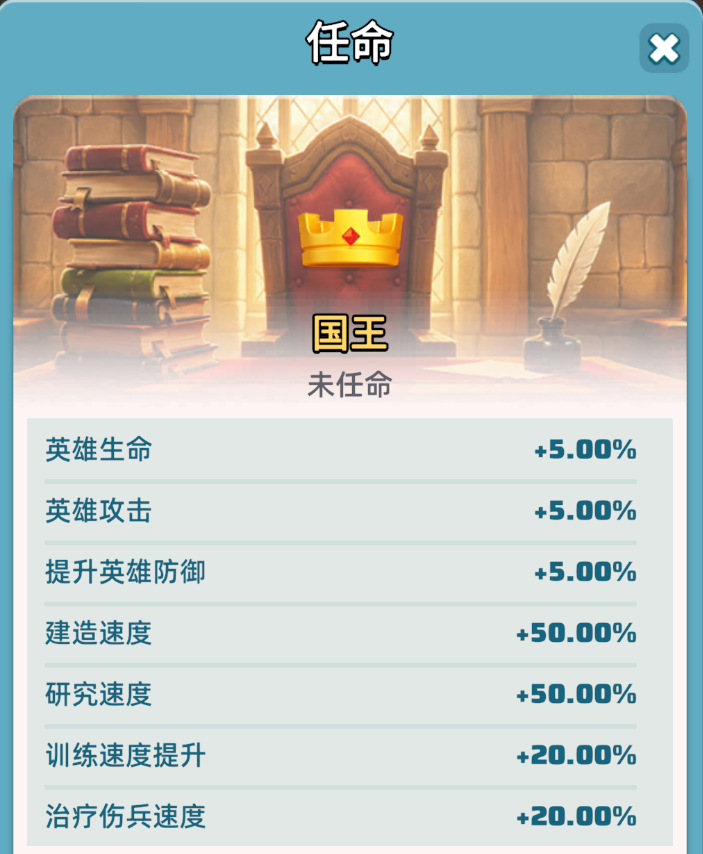
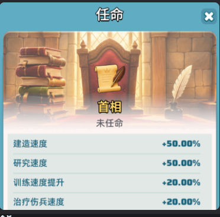
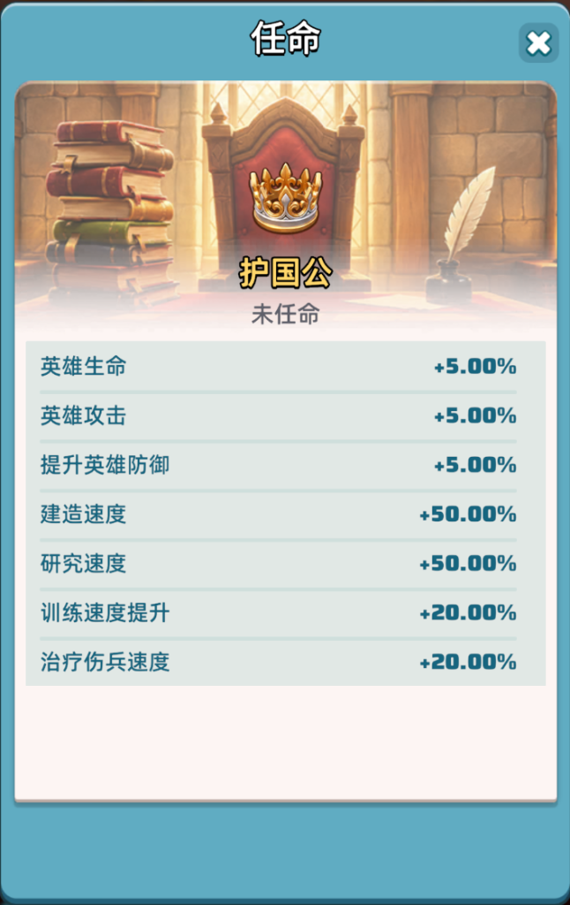

本次更新重做了整套王国官职体系：新增「护国公」官职、删除 4 个旧官职与「首相敕书」， 上调国王与首相增益，并首次引入王国惩戒、王国法令、国王技能、国王嘉奖、王国资金五大新玩法。 无论你是统领王国的国王，还是为王国奋战的一员，这些变化都与你息息相关。
护国公为本次新增官职，增益结构与调整后的国王完全一致——英雄三维 +5%，建造 / 研究 +50%，训练 / 治疗 +20%。
| 官职增益 | 数值 |
|---|---|
| 英雄生命 | +5.00% |
| 英雄攻击 | +5.00% |
| 提升英雄防御 | +5.00% |
| 建造速度 | +50.00% |
| 研究速度 | +50.00% |
| 训练速度提升 | +20.00% |
| 治疗伤兵速度 | +20.00% |
以下 4 个官职被整体删除，相关任命与增益不再存在：
领主们将无法再申请首相敕书。首相一职的进入路径改为国王授权体系（详见 3.2）。
调整前国王仅有英雄三维 +5%；调整后在保留三维的同时，一次性补齐建造、研究、训练、治疗四项，与护国公同档。
| 增益项 | 调整前 | 调整后 | 变化 |
|---|---|---|---|
| 英雄生命 | +5% | +5.00% | — |
| 英雄攻击 | +5% | +5.00% | — |
| 英雄防御 | +5% | +5.00% | — |
| 建造速度 | — | +50.00% | 新增 |
| 研究速度 | — | +50.00% | 新增 |
| 训练速度 | — | +20.00% | 新增 |
| 治疗伤兵速度 | — | +20.00% | 新增 |
三项旧增益全部翻倍以上，并新增治疗伤兵速度 +20%。
| 增益项 | 调整前 | 调整后 | 变化 |
|---|---|---|---|
| 建造速度 | +20% | +50.00% | +30pt |
| 研究速度 | +20% | +50.00% | +30pt |
| 训练速度 | +10% | +20.00% | +10pt |
| 治疗伤兵速度 | — | +20.00% | 新增 |
国王或首相可向王国内领主施加王国惩戒，被施加的领主将受到负面效果。共 7 种，命名对应七宗罪：



即：首相的所有新权益都以国王授权为前提，无法自行启用。
王国成员不可攻击对方城堡。
王国成员之间不可掠夺对方贸易马车。
王国成员之间不可掠夺对方悬赏任务。
国王或首相选择一名王国成员作为同行者后可释放，释放后发出一辆「皇家花车」。
每被点赞 20 次 → 爆出花车宝箱，王国成员可领取奖励释放后，王国内所有成员未来刷新的 4 辆马车，将晋升为「皇家贸易马车」。
更丰富的马车奖励 · 覆盖全员释放后，王城周围将生成大量「皇家采集点」。
在皇家采集点采集时拥有更快的采集速度释放后，王国内所有成员将获得增益：
训练速度 +2.5% ／ 治疗速度 +2.5%国王或首相选择一名王国成员作为「通缉者」后可释放。
被通缉者无法开盾、无法主动迁城，持续 5 分钟王国内各等级城市的城主或骑士在进行征税后，由税金转化的城市资金，也将转化为对应的王国资金。
王国内各领主完成城市任务后，为对应城市积累的城市资金，也将转化为对应的王国资金。
请各位领主留意以下更新事项：
停服更新时，除国王外，所有王国官职均将被卸任。更新完成后，领主需重新申请。
停服更新时，官职对应的头像框、称号、访客将同步被清除。
停服更新完成后，所有王国将获得 2,000,000 王国资金。